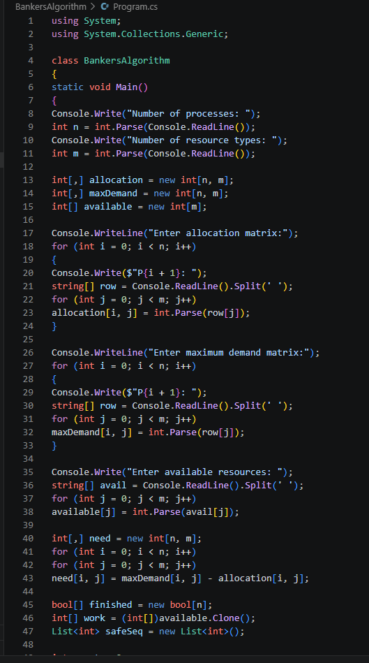
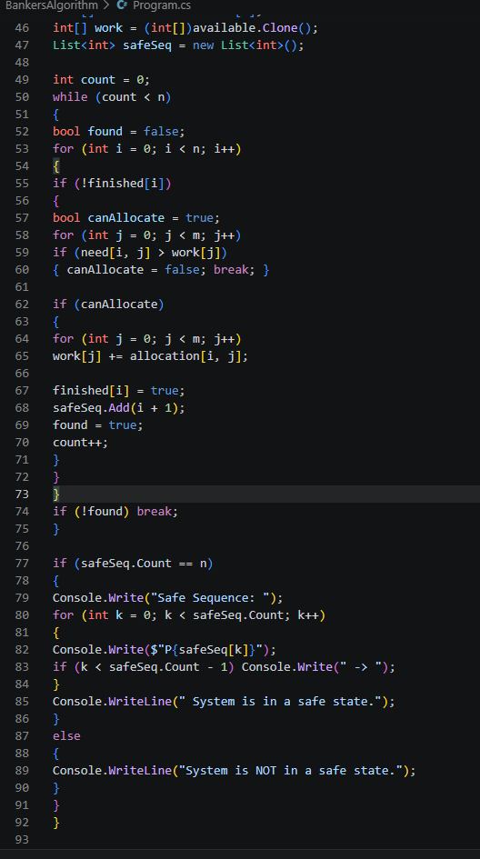
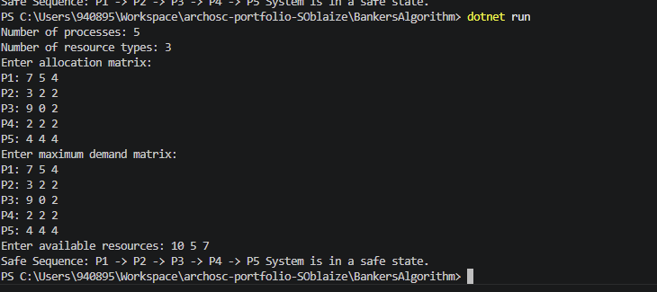
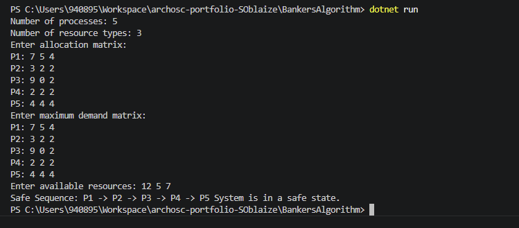
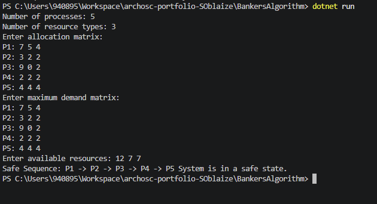

I used the Banker's Algorithm to check if the system is in a safe state with the original resources. Available resources: R1 = 10, R2 = 5, R3 = 7. The system is safe because each process could be allocated resources, finish, and release them back. The safe sequence was P1 → P2 → P3 → P4 → P5.

R1 was increased to 12, meaning processes requiring R1 can be satisfied more easily. The system remained safe with the same sequence P1 → P2 → P3 → P4 → P5. Available resources: R1 = 12, R2 = 5, R3 = 7.

R1 remained 12, R3 remained 7, but R2 was increased from 5 to 7. This allowed more flexibility in scheduling and the system remained safe. Available resources: R1 = 12, R2 = 7, R3 = 7.

I wrote a C# program that takes user inputs for resource types and processes, accepts allocation and maximum demand matrices, calculates the need matrix, and runs the Banker's Algorithm to find a safe sequence. It outputs whether the system is safe or unsafe.

